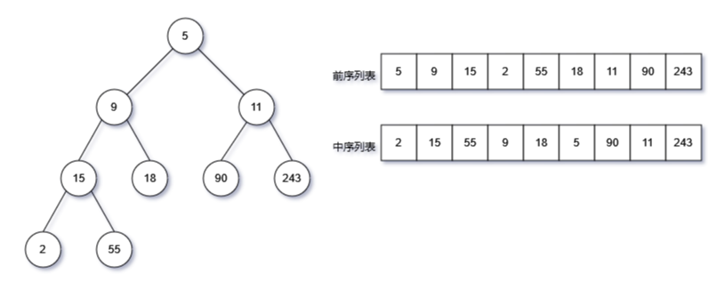
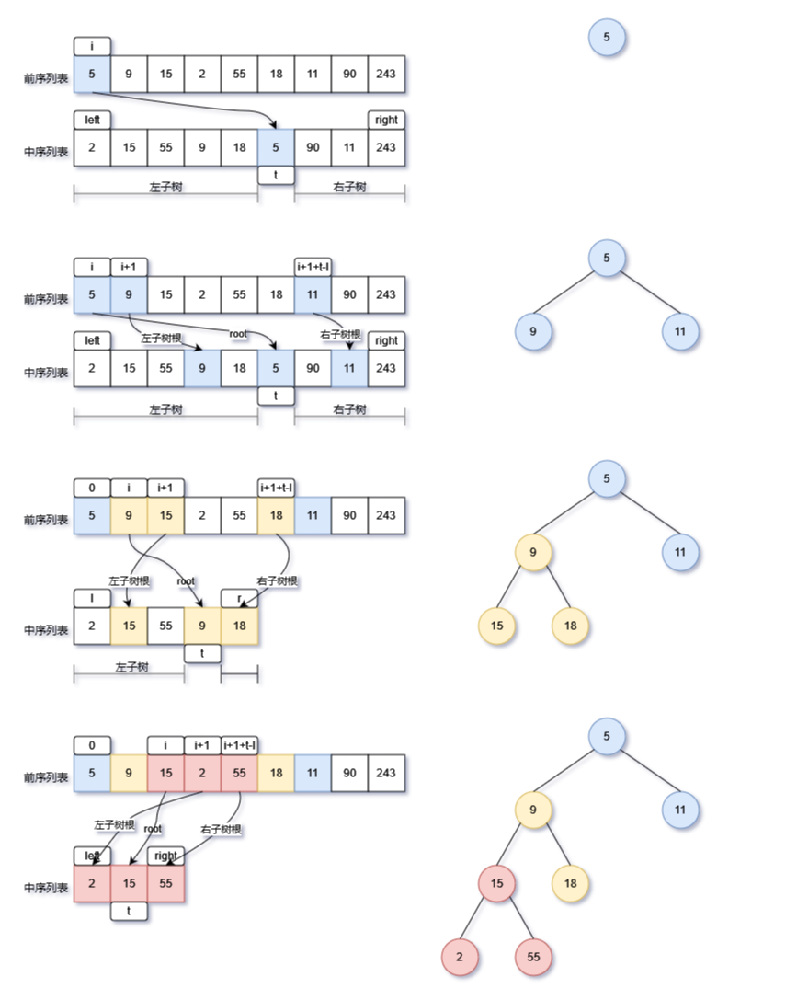

Python分治算法应用-构建二叉树
- 问题

根据二叉树的深度遍历前序列表(pre_list)和中序列表(mid_list)，构建对应的二叉树。如：
- 前序列表：
pre_list = [5, 9, 15, 2, 55, 18, 11, 90, 243]- 中序列表：
mid_list = [2, 15, 55, 9, 18, 5, 90, 11, 243]- 生成二叉树的广度优先遍历结果应为：
bfs_list = [5, 9, 11, 15, 18, 90, 243, 2, 55]，可以作为验证。
一、分治算法基本思路
在学习二叉树的深度遍历以及归并排序、快速排序等小节时，使用的就是分而治之的思路。通常分治法通过递归实现，整体上包含两个部分：划分问题和合并问题
- 划分问题：将题目问题划分为规模较小的问题；按照递归的基本原理，小问题与原问题结构是一致的；直到小的问题无法再划分（达到边界条件）时，停止划分
- 合并问题：当达到边界条件时，从下到上返回，开始合并小问题。
一个问题是否适合使用分治解决，通常可以参考以下几个判断依据。
- 问题可以分解：原问题可以分解成规模更小、类似的子问题，以及能够以相同方式递归地进行划分。
- 子问题是独立的：子问题之间没有重叠，互不依赖，可以独立解决。
- 子问题的解可以合并：原问题的解通过合并子问题的解得来。
二、解题步骤
根据分治算法的基本思路，下面解决构建二叉树：
- 在前序列表中，我们知道根节点在列表的最左侧，可以用下标i表示；
- 同理，在前序列表中，左子树的根节点紧跟着根节点，可以用下标i+1表示；
- 下面就要推算右子树的根节点，这里要稍微复杂，直接给出结果，如下表
| 树 | 根节点索引pre_list | 子树的列表区间mid_list |
|---|---|---|
| 当前树 | i | [left,right] |
| 左子树 | i+1 | [left,m-1] |
| 右子树 | i+1+(t-left) | [t+1,right] |
- t为当前树根节点在中序列表mid_list的索引（下标）
- t-left即为左子树元素的节点的个数。因为m在中序列表mid_list中的的位置，代表中t左侧全部为左子树节点，t的右侧全部为右子树的节点，因此t-left表示左子树节点的数量。

实现步骤
- 先通过i在前序列表pre_list，初始化根节点root；
- 通过i+1在前序列表pre_list，可以构建左子树根节点，然后连接在根节点的left指针上；
- 通过根节点元素值，获取在中序列表mid_list的索引t，
- 通过i+1+(t-left)在前序列表pre_list，可以构建右子树根节点，然后连接在根节点的right指针上；
- 让后通过递归的方式，继续探索左右子树，不断的向下构建子树和节点。
- 递归的边界条件：节点为叶子节点，无左右子树，即此时子树的列表区间中，left和right指向同一个节点（叶子节点），
right-left==0
# 使用递归的分治策略，根据前序列表和中序字典，逐层向下递归，向上返回的方式构建二叉树，可以通过return上部的print查看构建过程
# 参数说明：
# pre_list:深度优先前序遍历列表
# mid_dict:深度优先中序遍历列表生成的列表
# root_index:前序列表中根节点下标
# left:中序列表左侧元素下标
# right:中序列表右侧元素下标
def dfs(pre_list:list[int],mid_dict:dict[int,int],root_index,left,right):
# 当前节点为叶子节点，right和left指向同一个节点
if right-left<0:
return None
root=TreeNode(pre_list[root_index])
# 通过前序列表元素值，在中序列表中获取下标
t=mid_dict[pre_list[root_index]]
root.left=dfs(pre_list,mid_dict,root_index+1,left,t-1)
root.right=dfs(pre_list,mid_dict,root_index+1+t-left,t+1,right)
print(bfs_travel(root))
return root
三、注意要点
- 要理解t-left的含义；
- 递归的边界条件是当前节点为叶子节点，此时无法构建左右次数，因此
if right-left<0: return None - 在中序列表中获取根节点的索引，先将中序列表转换为字典dict，将元素值作为健，元素的索引作为值，这样可以通过元素值获取到中学列表的索引t，
t=mid_dict[pre_list[root_index]] - 列表转换为字典的用法如下：
mid_dict = {val: index for index, val in enumerate(mid_list)}
四、全部代码
from collections import deque
# 分治算法应用：
# 构建二叉树
# 根据深度优先前序遍历列表和中序遍历列表，还原二叉树
# 树节点类
class TreeNode:
def __init__(self, val: int):
self.val = val
self.left: TreeNode = None
self.right: TreeNode = None
# 以深度优先的方式构建二叉树
# 使用递归的分治策略，根据前序列表和中序字典，逐层向下递归，向上返回的方式构建二叉树，可以通过return上部的print查看构建过程
# 参数说明：
# pre_list:深度优先前序遍历列表
# mid_dict:深度优先中序遍历列表生成的列表
# root_index:前序列表中根节点下标
# left:中序列表左侧元素下标
# right:中序列表右侧元素下标
def dfs(pre_list:list[int],mid_dict:dict[int,int],root_index,left,right):
# 当前节点为叶子节点，right和left指向同一个节点
if right-left<0:
return None
root=TreeNode(pre_list[root_index])
# 通过前序列表元素值，在中序列表中获取下标
t=mid_dict[pre_list[root_index]]
root.left=dfs(pre_list,mid_dict,root_index+1,left,t-1)
root.right=dfs(pre_list,mid_dict,root_index+1+t-left,t+1,right)
print(bfs_travel(root))
return root
def build_tree(pre_list: list[int], mid_list: list[int]):
# 将列表转换为字典，且将列表的值作为健，下标作为键值，后续需要通过键值查找到列表的下标，此下标即为m，用于后续计算左右子节点的首尾下标，以及右子树根节点下标
mid_dict = {val: index for index, val in enumerate(mid_list)}
root=dfs(pre_list,mid_dict,0,0,len(pre_list)-1)
return root
def bfs_travel(root):
res = []
queue = deque()
queue.append(root)
while queue:
node: TreeNode = queue.popleft()
res.append(node.val)
if node.left is not None:
queue.append(node.left)
if node.right is not None:
queue.append(node.right)
return res
if __name__ == '__main__':
# bfs_list = [5, 9, 11, 15, 18, 90, 243, 2, 55]
pre_list = [5, 9, 15, 2, 55, 18, 11, 90, 243]
mid_list = [2, 15, 55, 9, 18, 5, 90, 11, 243]
root=build_tree(pre_list,mid_list)
res=bfs_travel(root)
print(res)